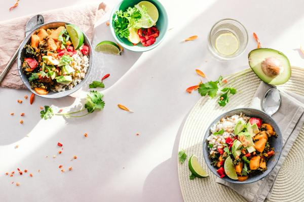
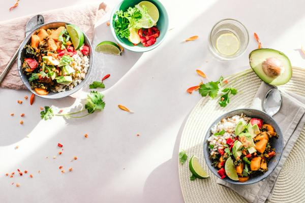
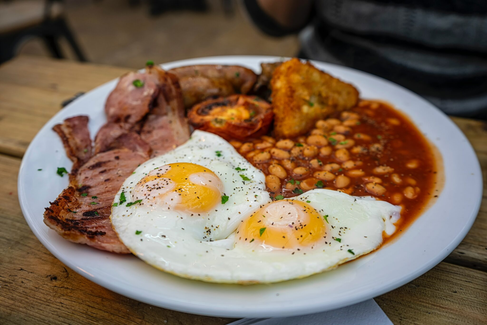
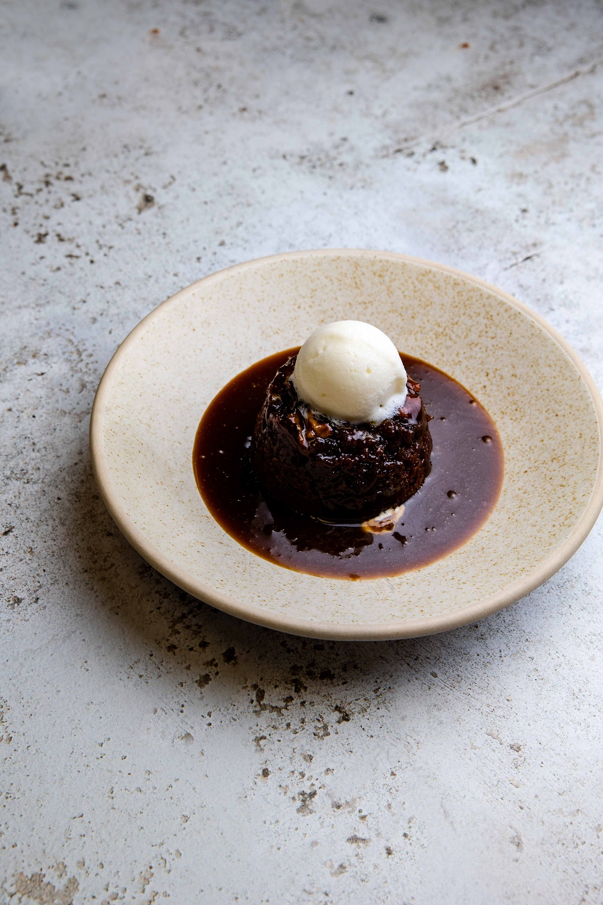
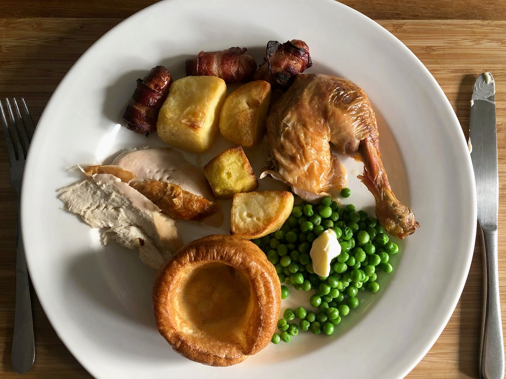
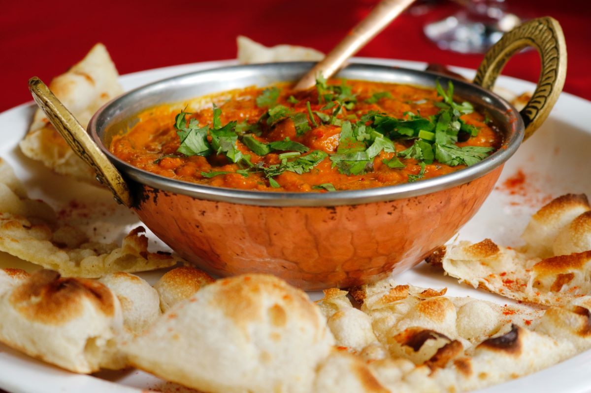
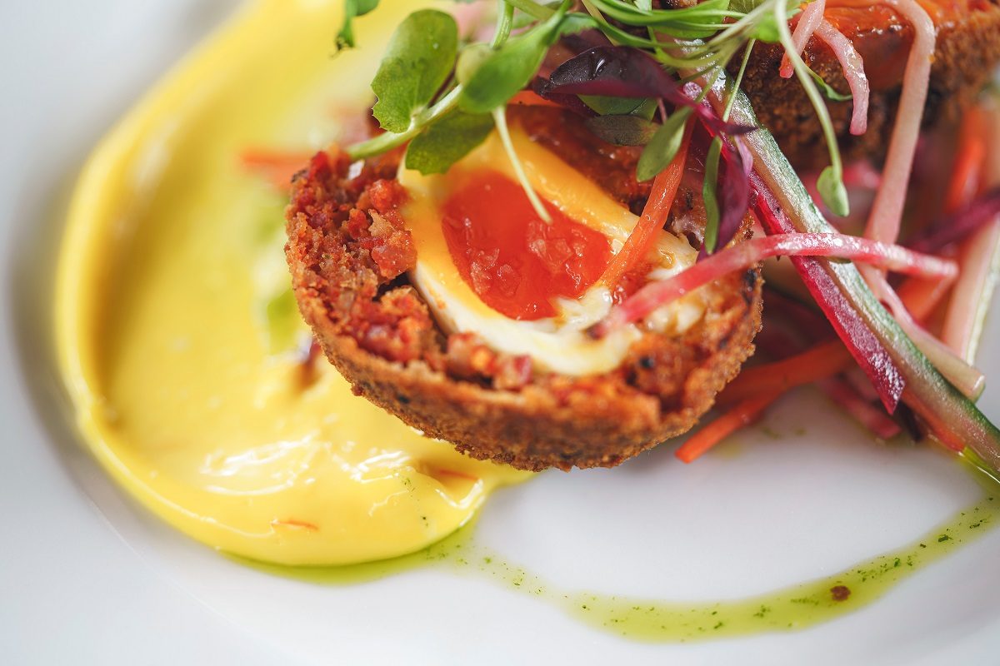

Full English Breakfast:
A culinary relic of our Anglo-Saxon roots, this dish became popular among all socioeconomic classes during the Industrial Revolution. It’s a cuddle on a plate, perfect for the morning after a big night out or to set you up for a long day of work. Head to a classic “caff” and go for the full works:
Where to get it: Terry’s Cafe
Opened in 1982 by a Smithfield’s butcher called (you guessed it) Terry, this old-school caff is now run by his son. It’s the perfect place for the full London experience. Enjoy your full works surrounded by black-and-white photos of locals, wireless radios and
Union Jacks…they even do an afternoon tea!

Sticky Toffee Pudding
Considering that the English are known as the “pudding-eaters,” it’s ironic that one of our most famous puddings is probably not from England at all. In fact, it’s not even a pudding in the classic sense; its preparation is closer to that of a muffin. Sticky toffee pudding was first brought to England by Canadian pilots in World War II. Not that we mind—when a dessert is this good, we’re more than happy to claim it as our own.
Where to get it: Hawksmoor Borough
Known for their rare-breed steaks and thoroughly British ambience, Hawskmoor is also the ultimate spot for London’s best sticky toffee pudding. Laden with toffee sauce and topped with handmade clotted cream, it’s the most indulgent way to finish off a gastronomic adventure in London’s oldest market.

Roast Dinner
You would be hard pressed to find a Brit who doesn’t feel a nostalgic pull toward our Sunday tradition: a full roast dinner with all the trimmings, surrounded by friends and family. Choose your meat and prepare to be comforted by roast potatoes, veggies, Yorkshire pudding and cauliflower cheese with lashings of gravy. In other words, several of the best traditional foods in London piled on one plate. A glass of red wine and the Sunday newspaper are optional, but highly recommended.
Where to get it: The Gantry
The definition of a typical family-run neighborhood eatery, this house-turned-restaurant is the perfect place to escape it all on a Sunday afternoon. We love its hidden nooks and crannies, not to mention the beautiful secret garden out back. The rare roast beef is out of this world, but make sure you save space for the cheese trolley. The family in charge has a French background, so you can be sure that the wine list is excellent.

Chicken Tikka Masala :
With a huge South Asian population, London is one of the best places in the world for Indian and Pakistani foods. Chicken tikka masala is the poster child for the Anglo-Indian cuisine that took the country by storm after the days of the British Empire. Rumored to have been created by a curry house in Glasgow, it’s even considered by some to be our national dish. The glorious combination of marinated chicken, yogurt and spices, from garam masala to cumin, is a unique representation of our country’s complex identity.
Where to get it: Punjab
There are literally hundreds of eateries where you can try this dish, and identifying the best Indian restaurants in London can be quite the culinary challenge.We highly recommend Punjab, an upmarket restaurant dating back to 1946. It serves the city’s closest approximation to the North Indian roots of chicken tikka masala.

Scotch Egg:
This is a staple of English snacks: a boiled egg, surrounded by pork meat, coated in breadcrumbs and fried. It’s found everywhere from street food stalls to gas stations. Legend has it that the Scotch egg was invented by the high-end grocery store Fortnum & Mason to be a portable snack for travelers. Whatever its origins, this spherical beauty is a true taste of England, and certainly one of our favorite traditional foods in London.
Where to get it: The Ginger Pig
After finding their feet as livestock farmers and manning a stall in Borough Market back in the ‘90s, Ginger Pig has become nothing short of iconic. Any restaurant worth its salt procures their meat from these butchers, who still have a permanent setup at Borough. Take it on good authority that their black pudding Scotch egg is a thing of beauty, and well worth the few pounds it’ll set you back.